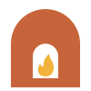

Four evenings at a small studio with one wood-fired kiln. You start with a lump of clay and leave with a pot you made.
Ask about the next class
Four evenings. A lump of clay becomes a pot you fired yourself.
Clay, glazes and the firing are included. You bring an apron.